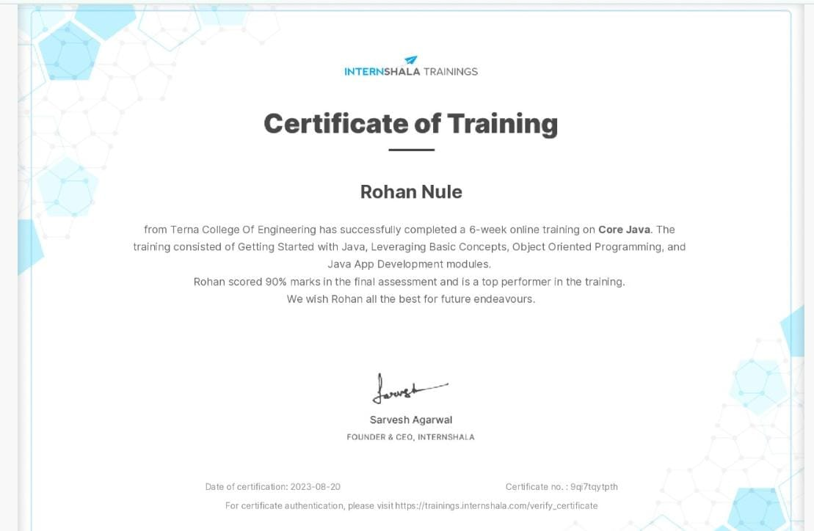
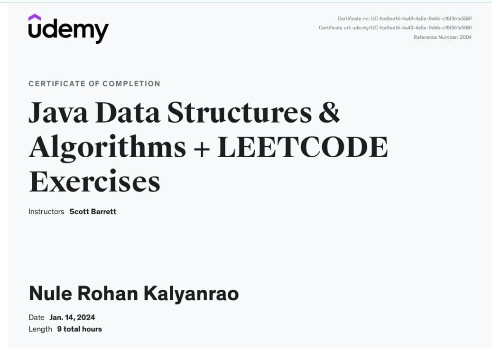

Java Developer | Backend Developer
View My WorkI'm a certified Java Developer with expertise in Core Java, Spring Boot, MySQL, and Backend Development. My journey in technology has been driven by a passion for creating robust and scalable applications. I enjoy solving complex problems and continuously learning new technologies to enhance my skills. I'm also enthusiastic about collaborating with teams to build innovative solutions and contribute to meaningful projects.
In addition to my technical skills, I have a strong interest in personal development and constantly seek opportunities to grow both professionally and personally. I believe in the power of technology to drive positive change and am committed to staying up-to-date with the latest industry trends and advancements.
The Backend Banking System is a robust and secure application developed using Spring Boot. It offers core banking functionalities like account management, transaction handling, and security features, all backed by a MySQL database.
The Quiz and Question Microservices project is a scalable and modular application designed using the microservices architecture. It leverages PostgreSQL for data storage and integrates multiple services using OpenFeign and Eureka Server for service discovery and communication.
This project demonstrates the creation of a web-based form for managing employee information. It allows users to input, save, and update employee data, utilizing JsonPowerDB (JPDB) for data storage and management.
The Supplier API is a Spring Boot application designed for managing supplier data. It provides a comprehensive set of APIs for CRUD operations on suppliers, secured with HTTP Basic Authentication, and includes Swagger integration for documentation and testing.
Internshala - March 3, 2023 to June 17, 2023
This certification covers the fundamentals of Core Java, including object-oriented programming concepts, Java syntax, and more. It was completed as part of the training program on Internshala.
 View CertificateUdemy - October 23, 2023 to January 4, 2024
This course focuses on Data Structures and Algorithms, covering essential concepts and techniques for solving complex problems. It was completed on Udemy and included practical assignments and assessments.
 View CertificateI'm inspired by the achievements and leadership qualities of: